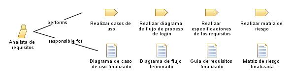

| Role: Analista de requisitos |
| |
 |
| El analista de requisitos es el profesional encargado de identificar, analizar y documentar los requisitos del sistema en un proyecto de software. |
| Synonyms: Especificador de requisitos |
|
Relationships
 |
| Primary Performs |
|
| Modifies |
|
Main Description
| El analista de requisitos es un rol clave en un proyecto de software. Su responsabilidad principal es identificar, analizar
y documentar los requisitos del sistema, asegurándose de comprender las necesidades de los usuarios y las partes
interesadas, y de traducirlas en especificaciones claras y concisas. El analista de requisitos trabaja en estrecha
colaboración con los diferentes actores involucrados, como usuarios finales, propietarios del negocio, desarrolladores y
diseñadores, para asegurar que los requisitos sean completos, consistentes, verificables y rastreables. |
Staffing
| Skills | Habilidades de comunicacion, Habilidades analiticas, Capacidad de escucha activa, Pensamiento critico, Conocimiento
tecnico, Pensamiento sistemico |
| Synonyms | Especificador de requisitos |
Key Considerations
| Comprension del dominio del negocio, Habilidades de comunicacion, Capacidad de analisis y resolucion de problemas,
Flexibilidad y adaptabilidad |
|